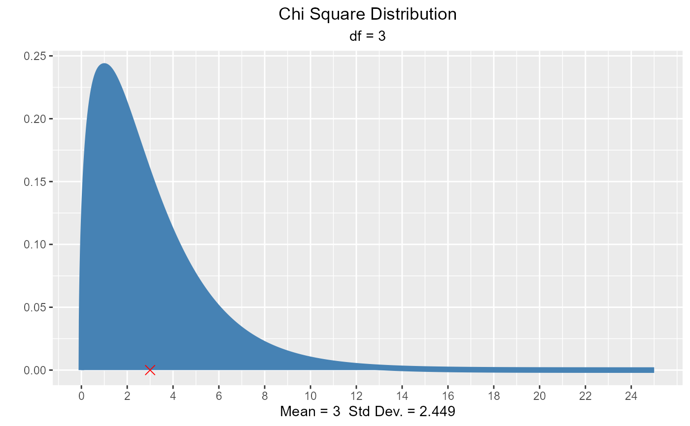
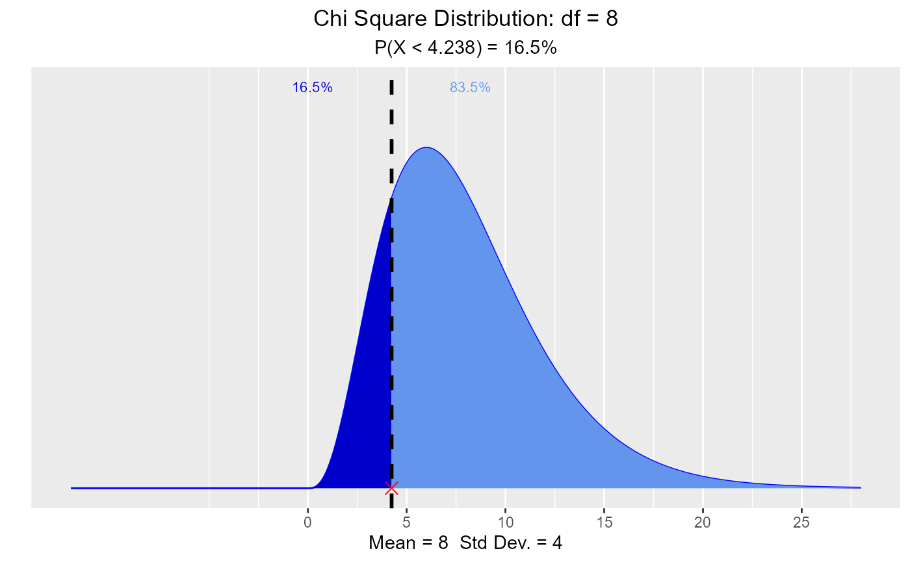

Visualize how changes in degrees of freedom affect the shape of the chi square distribution. Compute & visualize quantiles out of given probability and probability from a given quantile.
Arguments
- df
Degrees of freedom.
- normal
If
TRUE, normal curve with samemeanandsdas the chi square distribution is drawn.- xaxis_range
The upper range of the X axis.
- print_plot
logical; if
TRUE, prints the plot else returns a plot object.- probs
Probability value.
- type
Lower tail or upper tail.
- perc
Quantile value.
Examples
# visualize chi square distribution
vdist_chisquare_plot()

vdist_chisquare_plot(df = 5)
vdist_chisquare_plot(df = 5, normal = TRUE)
# visualize quantiles out of given probability
vdist_chisquare_perc(0.165, 8, 'lower')

vdist_chisquare_perc(0.22, 13, 'upper')
 # visualize probability from a given quantile.
vdist_chisquare_prob(13.58, 11, 'lower')
vdist_chisquare_prob(15.72, 13, 'upper')
# visualize probability from a given quantile.
vdist_chisquare_prob(13.58, 11, 'lower')
vdist_chisquare_prob(15.72, 13, 'upper')